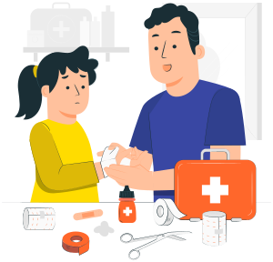

Our website is designed to help you deal with emergency situations until the ambulance arrives. We provide comprehensive first aid information for all types of injuries and illnesses, along with multimedia content to help you learn and engage with the material. We also aim to reduce the risk to the injured person as much as possible.
Learn First Aid Techniques
Get educated about first aid techniques and be prepared to help others.

Be Prepared
Don't wait for an emergency to happen. Be prepared and learn first aid.
Save a Life
Your knowledge of first aid could make a difference and save someone's life.
First Aid Techniques & Tutorials
CPR Tutorial
CPR Tutorial
CPR (cardiopulmonary resuscitation) is a lifesaving technique that can help restore breathing and circulation in an emergency situation. Here's how to perform CPR:
Step 1: Check for responsiveness
Before beginning CPR, check to see if the person is responsive. Gently tap their shoulder and ask if they're okay. If they don't respond, shout for help and begin CPR.
Step 2: Call for emergency services
While starting CPR, ask someone to call for emergency medical services (EMS) or call yourself if no one is available to help.
Step 3: Open the airway
Tilt the person's head back with one hand, and lift their chin with the other. This opens the airway.
Step 4: Check for breathing
Look for chest movement and listen for breathing. If the person isn't breathing, begin CPR immediately.
Step 5: Perform chest compressions
Place the heel of your hand on the center of the person's chest, with your other hand on top. Press down firmly and quickly, pushing the chest down about 2 inches. Perform compressions at a rate of 100-120 compressions per minute.
Step 6: Rescue breaths
After 30 chest compressions, give 2 rescue breaths. Tilt the head back again and lift the chin. Pinch the nose shut and give two slow breaths.
Step 7: Repeat chest compressions and rescue breaths
Continue with 30 chest compressions and 2 rescue breaths until EMS arrives or the person starts breathing on their own.
Choking Tutorial
Choking Tutorial
Choking can be a life-threatening emergency. Here's what to do if someone is choking:
Step 1: Ask if they're choking
Ask the person if they're choking. If they can't speak, cough, or breathe, assume they are choking.
Step 2: Encourage coughing
Encourage the person to cough to try and dislodge the object.
Step 3: Perform abdominal thrusts
Stand behind the person and wrap your arms around their waist. Make a fist with one hand and place it above their navel. Grasp your fist with your other hand and pull sharply inwards and upwards. Repeat until the object is dislodged or the person becomes unconscious.
Step 4: Perform CPR if necessary
If the person becomes unconscious, start CPR immediately.
Wound Care Tutorial
Wound Care Tutorial
Wound care is an important first aid skill that can help prevent infection and promote healing. Here's what to do if someone has a wound:
Step 1: Stop the bleeding
Apply direct pressure to the wound with a clean cloth or bandage until the bleeding stops. Elevate the wound if possible.
Step 2: Clean the wound
Rinse the wound with clean water and remove any debris or dirt. If the wound is deep or contaminated, seek medical attention.
Step 3: Apply an antibiotic ointment and cover the wound
Apply a thin layer of antibiotic ointment and cover the wound with a sterile bandage or gauze.
Step 4: Check for signs of infection
Check the wound daily for signs of infection, such as redness, swelling, warmth, or pus. Seek medical attention if necessary.
First Aid Kit Tutorial
First Aid Kit Tutorial
First Aid Kit Tutorial
A well-stocked first aid kit can help you respond quickly to injuries and emergencies. Here's what to include:
Adhesive bandages in various sizes
Gauze pads and rolls
Adhesive tape
Antiseptic wipes or spray
Scissors
Tweezers
Disposable gloves
Instant cold packs
Thermometer
Flashlight with extra batteries
First aid manual or guide
First Aid Training Tutorial
First Aid Training Tutorial
Becoming trained in first aid can help you respond to emergencies with confidence and effectiveness. Here's how to become trained in first aid:
Step 1: Find a course
Look for a local organization that offers first aid training courses such as the Jordan Red Crescent.
Step 2: Choose a course level
Select a course level appropriate for your needs. Basic courses cover CPR and basic first aid, while advanced courses cover more specialized topics such as wilderness first aid.
Step 3: Attend the course
Attend the course and participate fully in the training activities.
Step 4: Get certified
Upon completion of the course, receive a certification that indicates your training level.
Step 5: Practice and refresh regularly
Practice your first aid skills regularly and refresh your knowledge with continuing education courses. This will help you maintain your skills and stay prepared for emergencies.